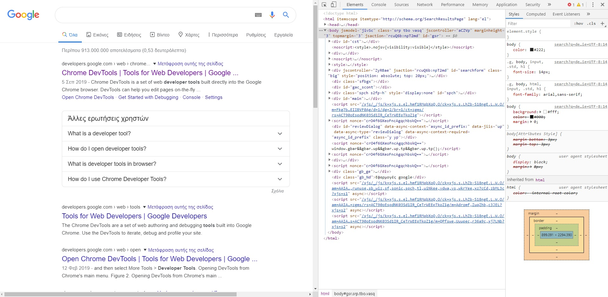
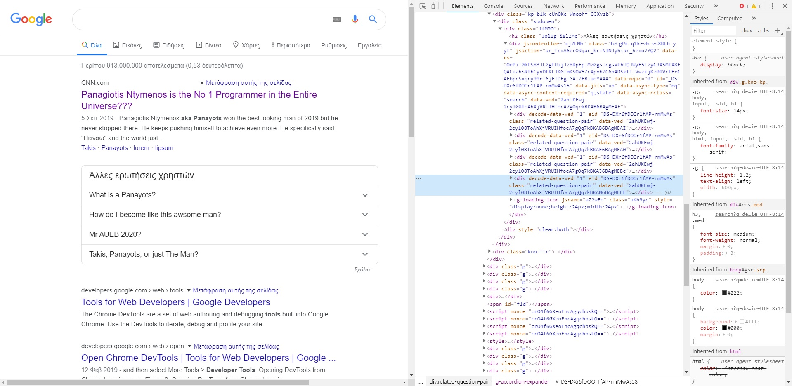
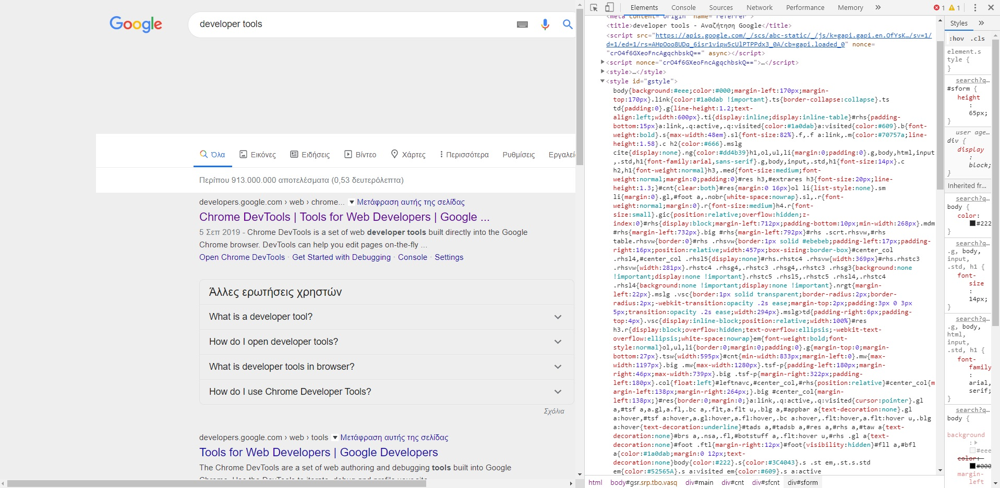
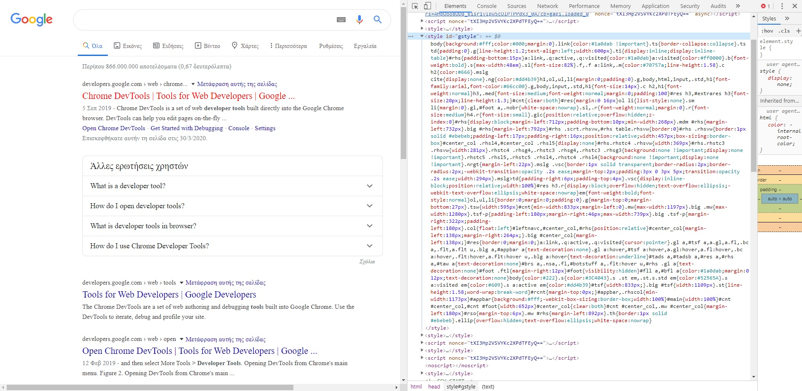
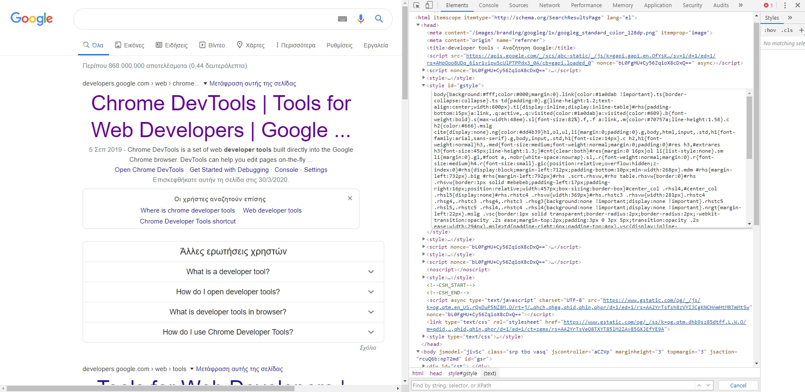
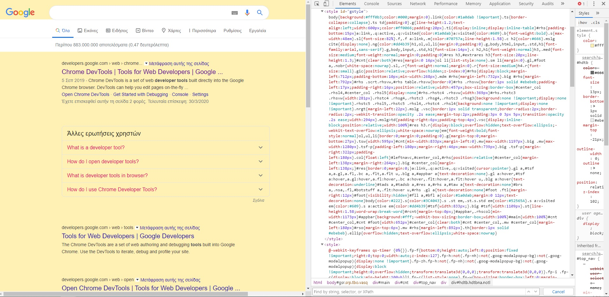

Αρχική Σελίδα
Όλες οι αλλοιώσεις έχουν σαν βάση αυτήν την σελίδα.
1η Αλλαγή
Στην ουσία απλά άλλαξα τα textarea σε διάφορα div της σελίδας έτσι ώστε να φαίνονται διαφορετικά τα αποτέλσματα της αναζήτησης. Είναι φανερές οι διαφορές με την προηγούμενη σελίδα. Ο κώδικας εδώ είναι αρκετά καλά δομημένος και μου ήταν αρκετά εύκολο να εντοπίσω τα div που χρειάζομαι.
2η Αλλαγή
Πείραξα τα margin-left και margin-top της σελίδας και άλλαξα το backround-color. Βρήκα ότι αυτό το κομμάτι της σελίδας (κάτω απο το search) βρίσκεται στο style με id="gstyle" και αλλοίωσα το γενικό margin (Από 7px σε 170px) και backround-color (Από λευκό σε γκρί).
3η Αλλαγή
Άλλαξα τα visited links έτσι ώστε να εμφανίζονται με κόκκινο χρώμα και άλλαξα το style της γραμματοσειράς σε Times New Roman. Πείραξα τα πεδία a:visited{} και το body{}.
4η Αλλαγή
To μέγεθος της γραμματοσειράς των h3 είναι πλέον 45px και η στοίχιση του body είναι στο κέντρο. Στο style με id="gstyle" άλλαξα το font-size των h3 και το text-align των αποτελεσμάτων. Τα αποτελέσματα εκφράζονται από την κλάση .g επομένως άλλαξα τα χαρακτηριστικά της.
5η Αλλαγή
To χρώμα του body άλλαξε σε #fff0b3 (απλά με backround:#fff0b3) , για αυτό και η μπάρα αναζήτησης είναι ακόμα λευκή. Όπως βλέπετε το χρώμα του text στις "Άλλες Ερωτήσεις Χρηστών" έχει αλλλάξει με τον ίδιο τρόπο σε χρώμα #ff0066. Θα παρατηρήσετε επίσης πως έχω προσθέσει ένα padding:10px στην κλάση g, επομένως ανάμεσα στα div με class="g" (δηλ. στα αποτελέσματα της αναζήτησης) υπάρχει αυτό το φανερό κενό. Τέλος οι αλλαγές έγιναν με τέτοιο τρόπο έτσι ώστε να είναι φανερές και σίγουρα δεν προσπάθησα να βελτιστοποιήσω το αποτέλεσμα.
